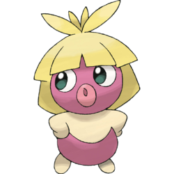

Pokemon Babies
Gotta adopt em all!
Pichu

Pichu is a small, ground-dwelling rodent Pokemon with pale yellow fur. Its eartips, collar, and tail are black and angular. Pichu's pink cheek pouches can store small amounts of electricity, and its tiny nose looks like a dot. Pichu is classified as a quadruped, but it can walk easily on its hind legs.
Pichu is a social Pokemon known for its playful and mischievous demeanor. It is usually found in groups and often touch tails with other Pichu as a show of courage, creating a shower of sparks that can make them cry. It is inept at storing electricity, and may discharge if amused, startled, or subjected to shock. However, it cannot discharge without being shocked itself. Charging up is more easily done on days of dryness or thunderclouds. The crackling of static electricity generated by Pichu is audible. It can zap an adult human, but will surprise itself if it does. Pichu primarily lives in the forest, though it has also been depicted to thrive in urban areas.
Igglybuff

Igglybuff is a small, bipedal balloon-like animal that is completely pink. It has a rounded tuft of hair on top of its head, a small swirl-like pattern on its forehead, and red eyes. Igglybuff has small, stubby limbs. This small Pokemon is extremely elastic and can bounce like a ball, although it may not be able to stop if it does this.
It smells sweet to calm the emotions of its foes. Although it has singing abilities, it is not able to sing for long periods due to its underdeveloped vocal cords. It often gets a sore throat from singing too frequently. Igglybuff tend to live in the grasslands close by freshwater streams. It uses water from the streams to gargle in its sore throat.
Magby

Magby is a bipedal Pokemon that has a red body with a yellow, flame-shaped marking on its stomach. Its head is covered with large lumps, and it has a rounded, yellow beak. There is a single spike on its back and it has a tapered tail. Its short arms have three clawed fingers, while its feet have only two clawed toes.
Magby can breathe 1100 F (600 C) flames, and hot embers drip from its mouth. Its health is determined by these flames. Yellow flames show that a Magby is in good health, while flames mixed with a lot of smoke show that it is fatigued. Magby normally lives in volcanic craters. However, it can be seen living in towns.
Togepi

Togepi is a small, light yellow Pokemon with a round body that is still encased in its eggshell. Togepi does not shed its shell. The Egg has red and blue shapes on it. Togepi has stubby hands and round feet with two toes each. Togepi has black eyes and five spikes on its head that seem to form a crown. It also has semi-oval, brown pads on the soles of its feet.
Togepi is able to release poison from the spikes on its head. The anime has shown that it can retract into its shell, which it usually does to sleep. It is able to siphon the positive energy of others, and then release it to those in need of it. It has a very joyful nature. As a result, it is said that it shares its joy with those who take care of it. Because of its disposition, Togepi is seen as a sign of good luck, especially if a Trainer is capable of getting a sleeping Togepi to stand. Although rare in the wild, Togepi can most commonly be found living within the forests.
Smoochum

Smoochum is a small, humanoid Pokemon that resembles a baby. It has a large head with blonde hair that reaches its shoulders and has large bangs. There are several tufts of hair sticking up on top of its head. Its skin is light purple with a cream-colored chest, arms and feet. It has large, blue-green eyes and a pair of large, pink lips. These lips are sensitive enough that Smoochum uses them to identify and examine objects that it sees for the first time.
When walking, Smoochum rocks its head back and forth. This Pokemon is very active and runs about, although it often falls. Being very conscious of its appearance, it will check is reflection when given the chance to make sure it is not dirty. Smoochum is found living in cities. Smoochum is a female only species, with no male counterpart.
Mantyke

Mantyke resembles a manta ray. It has a round body with wide, flat fins. Its back is dark blue, while its underside is light blue. There are two red spots with white outlines and a light blue, curved line on its back. These markings give the overall impression of a smiling face and vary slightly in each region. It has two long, curving antennae on top of its head and black eyes with eyelash-like markings underneath. The antennae are used to sense ocean currents. Mantyke is a friendly Pokemon that can be found swimming near the ocean's surface with schools of Remoraid.